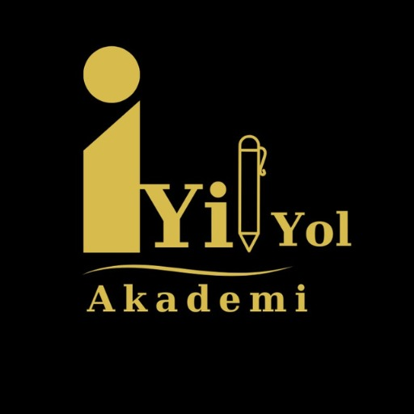
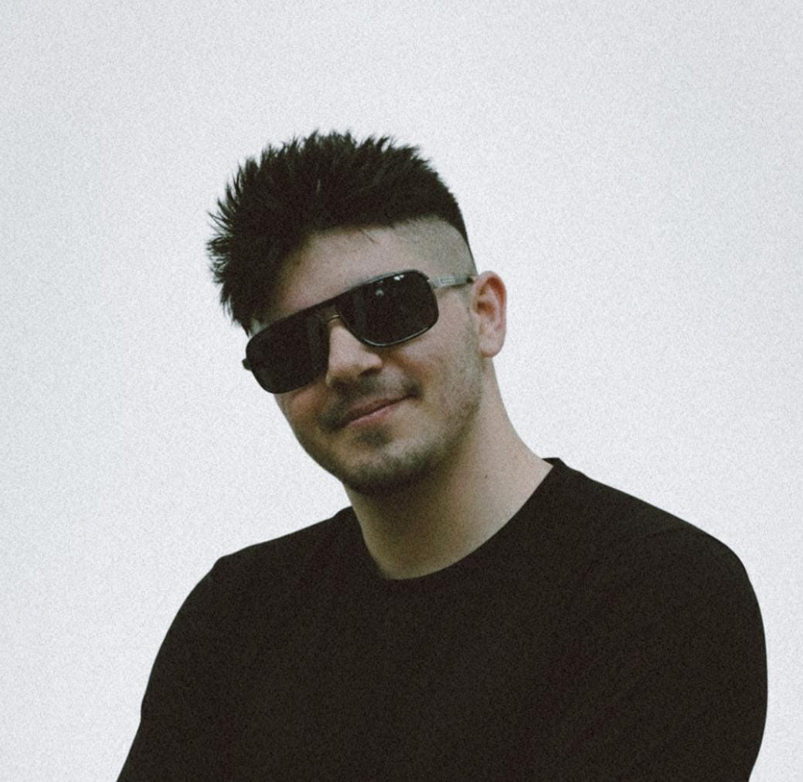
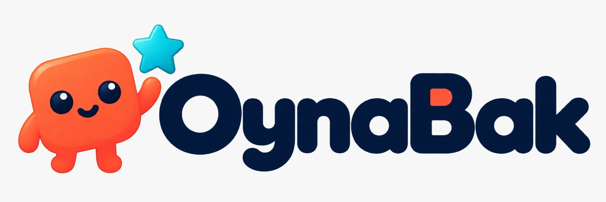
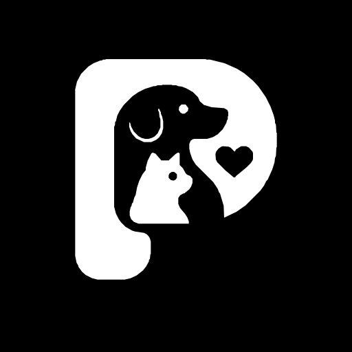
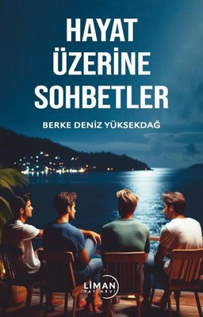
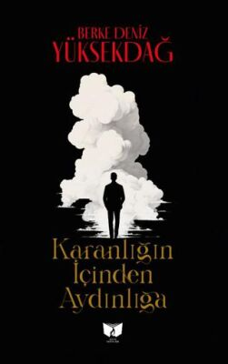

İyi Yol Akademi
İyi Yol Akademi: kişisel gelişim ve öğrenme odaklı mobil uygulama.
Logoyu indir ↗Google Play ↗Basın ve iş ortakları için biyografi, girişimler, logolar, fotoğraf ve indirilebilir tanıtım dosyası.
PDF dosyasında üç girişimin logosu, biyografi, portre fotoğrafı, kitap kapakları ve başarı bilgileri bulunur.

Berke Deniz Yüksekdağ, teknoloji odaklı dijital girişimler geliştiren bir girişimcidir. İyi Yol Akademi, OynaBak ve Patiyiz projeleri üzerinde çalışmakta; kitapları ve derleme projeleriyle yayıncılık alanında da üretim yapmaktadır.

İyi Yol Akademi: kişisel gelişim ve öğrenme odaklı mobil uygulama.
Logoyu indir ↗Google Play ↗

Patiyiz: evcil hayvan sahiplerine yönelik geliştirilen sosyal platform.
Logoyu indir ↗patiyiz.com ↗Basın kullanımı için ilgili logoyu veya fotoğrafı indirin. Görselleri değiştirmeden ve bağlamı korunarak kullanın.
Fotoğrafı indir ↓Bu sayfadaki içerikleri kaynak belirterek haber ve tanıtım çalışmalarınızda kullanabilirsiniz.


Girişim detayları ve güncel durum için resmi bağlantıları kullanın.
İletişime geç